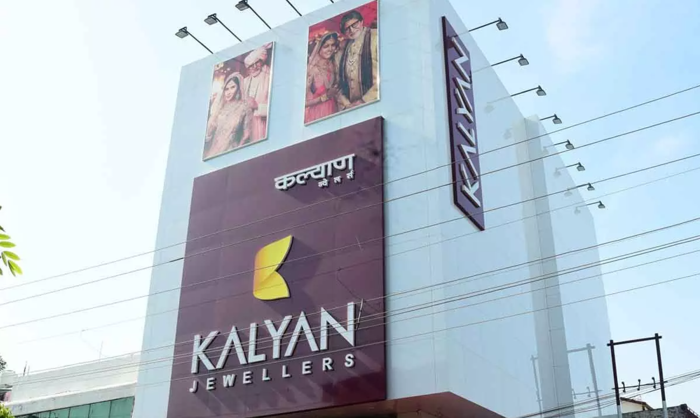

CHITTOOR
JOYALUKKAS JEWELLERY

Joy Alukkas is an Indian businessman from Kerala. He is the chairman and managing director of Joyalukkas Group.
According to a 2023 Forbes report, he has a net worth of $4.4 billion.
Joy Alukkas is concentrated in overseas business and started trading in gulf countries.
Joy Alukkas' original name according to Malayali naming conventions was A. V. Joy.
The Joyalukkas Group has also always believed that the people and the community within which it operates are the cornerstones.
Its success and as such is actively involved in CSR (Corporate Social Responsibility) activities across the world.